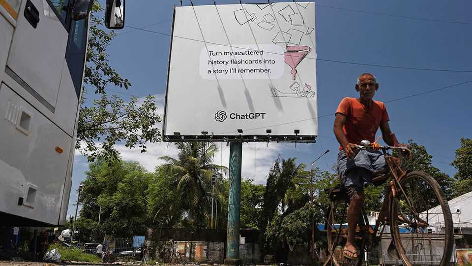
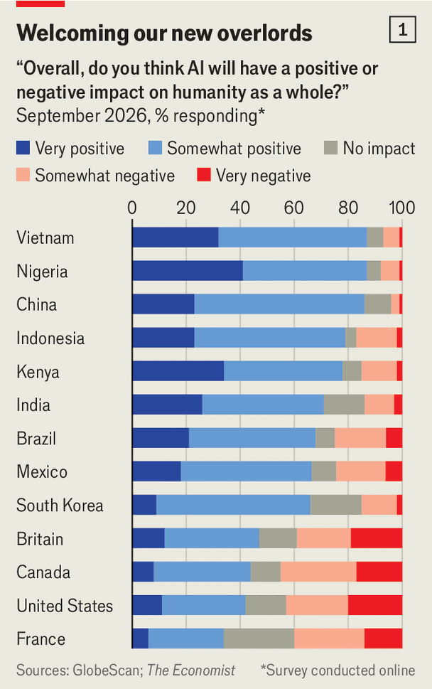
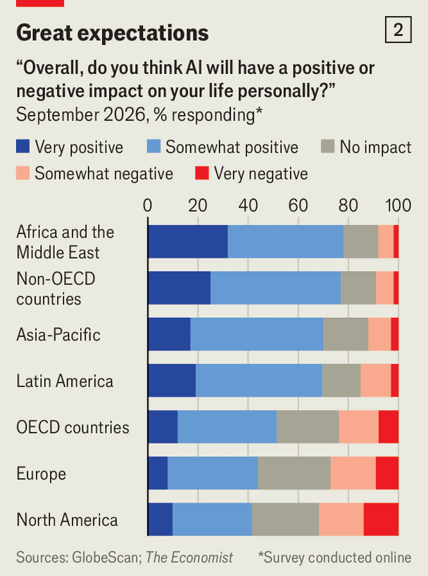

The surprising popularity of AI
Unlike rich Westerners, many around the world feel hopeful about the technology

Oct 22nd 2026
AS A BOY growing up in the aftermath of the Korean war, Bae Oh-do would venture out into the forest to gather firewood to heat his family’s home. “The manual era is completely ingrained in me,” says the 70-year-old violin salesman, sitting under a tree in a park in Seoul’s Jong-no district. He recalls having to use a foot-operated “treadle pump” to get water, as well as his delight when the first tractors rolled into the South Korean countryside.
In recent decades he has seen things “develop so conveniently”, with the internet and smartphones. And what about artificial intelligence? “It’s nothing for humans to worry about. This kind of thing is good,” he says. “They should keep developing the technology. Humanity has advanced so much up to our generation. There’s no telling how the world will change.”

Read the headlines in Western media and it may seem as though a backlash to AI is spreading fast everywhere. But so far, it is not. Mr Bae’s sunny disposition about AI is shared by almost two-thirds of South Koreans, according to a survey that GlobeScan, a polling firm, conducted for The Economist. Outside rich countries this good feeling is even more strongly shared: nearly nine in ten people in Nigeria and Vietnam, for example, said that AI will improve not only their own lives, but the lot of humanity (see chart 1).
The polling across 34 countries was carried out online, which could tilt attitudes in favour of AI. Yet in the same survey sentiment in rich Western countries was much gloomier. In America, Canada and France more people felt negatively than positively about AI’s future impact on humanity. In other Western countries sentiment was net-positive, but far less so than in the poor world. Another recent survey of 37 countries, carried out by Gallup with Microsoft, returned similar results: AI is broadly popular, but less so in rich Western countries.
Why the gap between the West and the rest? Some of the optimism may cool as more people in poor countries come into direct contact with AI or data centres, and see the technology helping or hurting some more than others. Around 9% of working-age Kenyans used AI in the second quarter of 2026, according to a study by Microsoft. Yet 85% told GlobeScan that it would change their lives for the better.

But plenty of people, poor and rich alike, are already at least vaguely conscious of AI’s pitfalls. In a survey by Pew Research Centre, South Koreans were most likely (along with Australians) to say they expect AI to generate massive job losses and worsen inequality. For now, though, such fears appear to be outweighed by intrigue about the technology’s promise.
Part of the explanation is that many workers outside the richest countries have less to lose from AI than do their counterparts in the West. In much of the poor world work is often informal and, compared with jobs in the West, precarious. The notion of losing a secure office job to technology is more of a rich-world problem (though in India, say, information-technology and other back-office workers look vulnerable to disruption).
The poor world has much to gain from AI, too. In countries where institutions and formal education can be lacking, AI helps some people help themselves. “Pessimism is a privilege for those who can afford to despair,” argues Payal Arora, author of “From Pessimism to Promise”, a book about diverging attitudes to technology.
In India users have gained cheap or free access to apps like Gemini from Google or ChatGPT from OpenAI; nearly one in five working-age Indians used generative AI in the second quarter of 2026, compared with a third of Americans, according to a recent Microsoft study. DeepSeek, a free Chinese alternative, is popular in Africa, where Microsoft estimates that in many countries about one in ten working-age people used generative AI in the second quarter.
A narrow street in a busy suburb of Mumbai illustrates the benefits. Many shops on it use ChatGPT to generate advertisements. Dinesh Chandra, an optician, asked the chatbot to produce a “gravity-defying” photo for his brand. It duly created an image, now printed on brochures, of glasses floating above clouds while riding a feather. Next door Omkar Sapre, who sells dried fruit, masalas and pickles, posts “beautiful pictures” from ChatGPT on Instagram and WhatsApp, and has noticed his sales pick up. Ashlesha, who works at a dry cleaner on the same street, says, “We work hard and AI is extra support for us. Everyone is on Instagram.”
All of them love the convenience of using AI; none worry about safety, privacy or data leaks, much less “AI slop”. The shaming of AI content seems less common outside America and Europe. Westerners “have historically monopolised knowledge and ideational production, but AI challenges that,” says Yuen Yuen Ang of Johns Hopkins University. “Is it a crisis only for those who lose from disruption?”
As Mr Bae illustrates, even in some rich and middle-income countries where there seems more to lose from disruption, AI is surprisingly popular. Singaporeans are among the world’s top AI users, says Microsoft; nearly two-thirds told GlobeScan they thought the technology would have a positive effect on their lives. In Malaysia, which is experiencing a big data-centre boom, minor protests against the sites have not yet turned into a wider backlash.
Some countries where AI-optimism runs high share common factors that seem to cut across socioeconomic lines. One is a looming shortage of workers. Parts of the world that have long had low fertility rates, like East Asia, are ageing rapidly. Many hope that AI (and AI-powered robots) can fill in for workers who do not exist, helping countries to care for greying populations.
Another feature of some AI-optimist countries is a living memory of technology radically transforming societies in the span of a lifetime. Singapore, South Korea and Taiwan went from poor to rich partly by rapidly adopting new technologies that originated abroad.
In China and India technological leaps, including through digital payment and delivery apps, have brought extraordinary convenience and autonomy. “At our age, we’ve lived through countless changes,” says Ms Meng, who works in advertising in Beijing and who, at 40, feels ancient. “Things haven’t even settled in China before another huge shift comes two or three years later.” In India smartphones have offered hundreds of millions of people a “God in their hand” over the course of just a few years, says Ms Arora.
In Western countries, by contrast, pessimism towards AI may reflect people’s perception that their lives are not getting much better, that AI could make their lives worse—and that politicians cannot be relied upon to protect their interests. Daniel Dobrygowski, author of the book “Technology Governance”, argues that this attitude is coloured by people’s experience of social media and Big Tech, which Western governments have struggled to rein in.
The ways in which politicians and firms talk about AI may also make a difference. Bosses of American labs warn of job losses and human extinction as they race towards “artificial general intelligence”. Asian politicians and tech bosses rarely talk like that, perhaps in part because they are not developing frontier capabilities of their own. Instead they tend to focus on the practical uses of AI—what they will do with the technology, rather than what it will do to them. You are unlikely to hear the boss of Samsung talking publicly about AI doom.
In China, where big advances in AI are being made, officials do worry about risks, from cyber-security threats to economic dislocation. But the general tenor of state media is boosterish.
It would be wrong to conclude, though, that people in more AI-positive countries have no worries at all. Some are more resigned to the advance of technology as a fate that cannot be avoided. “AI’s impact might be different from every previous shift. But the Earth has its own rhythms,” says Ms Meng in Beijing. “When it’s not meant for you to survive, you won’t. You can’t live every day worrying, right?”
Cho Kyu-jin of Seoul National University reckons that South Koreans are embracing AI despite their concerns because the “fear of being left behind is higher than that of losing stability”. Kim Ah-ran, a 40-year-old labour lawyer, says, “When changes came in the Industrial Revolution, there were positive and negative effects. We’ll find a way to live.” Her young son, standing next to her at the Galaxy Robot Park outside Seoul, is mimicking a humanoid that is practising Muay Thai moves, while clutching a workbook that explains how to use AI to code such robots.
Such pragmatic acceptance suggests that positive attitudes like Mr Bae’s could yet be fragile. Kim Jeong-nam of KAIST, a tech-focused university, serves on South Korea’s Presidential Council on National Artificial Intelligence Strategy. He thinks that South Koreans’ tolerance is conditional on “competently built” policy. If AI starts to “produce visible losers”, such as in exam fairness or jobs, he worries that leeway could vanish. The same could hold true elsewhere. “How are you going to invent an AI that can drive a motorbike?” asks Anderson Santos, a delivery driver in São Paulo, Brazil, who is later dismayed at a mention of driverless cars.
There are some nascent signs of data-centre backlash in other parts of the world, too, if nothing like the outright rebellion seen in many parts of America. In the Philippines people are marching against “Pax Silica”, an American-led initiative to develop AI and semiconductor supply chains. In Thane, a city near Mumbai, hundreds have protested against an Amazon hyperscale data centre that is planned for their neighbourhood. Rage is not yet all-consuming, though. “It’s just like any other factory,” says one resident. “AI is the future.”■